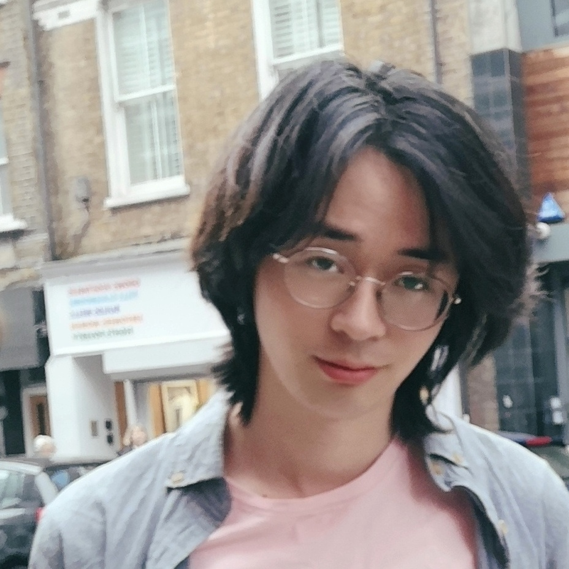
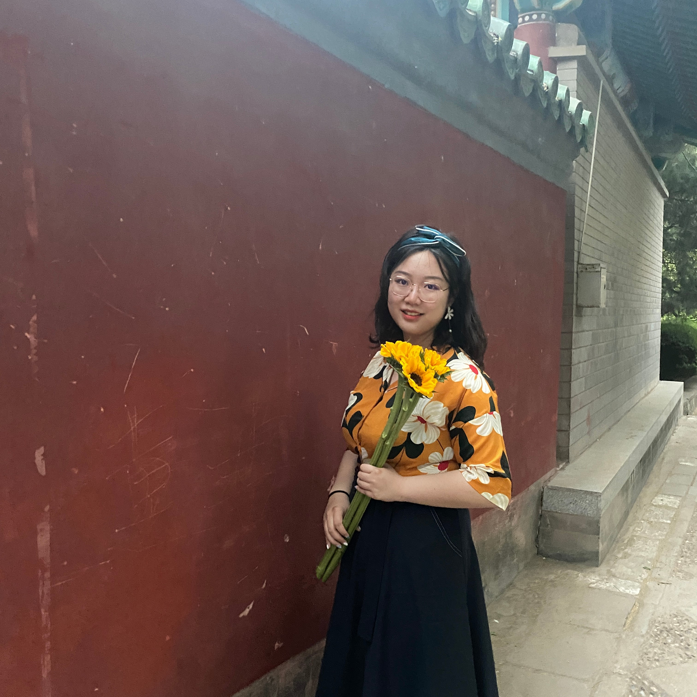

Aine Ito
伊藤愛音
Bilingualism and Language Processing Lab
Lab meeting: We have a weekly lab meeting in the graduate reading room (AS5-05-09) during semester time. If you are interested in attending, please subscribe to the psycholing mailing list here to receive announcements about upcoming meetings.
We have a poster introducing eye-tracking (created by Daiwen & Danning) here! (best with a mobile)
If you are interested in taking part in on-going studies at NUS, you can sign up via our Language Science at NUS website.
Lab members
PI

|
Aine ITO
My research investigates what makes it difficult to comprehend a non-native language efficiently and explores ways to facilitate non-native language processing with a focus on predictive processing. I am also interested in how orthographic information influences listening comprehension. I mainly use eye-tracking (visual world paradigm), EEG and reaction time measures in my experiments. |
PhD students
|  |
Mingyuan YANG
Hi, I’m currently a PhD student in Aine Ito’s lab. My research interests focus on the language process of bilinguals, in particular the interaction of L1 and L2, and varied linguistic representations of different language groups. You could contact me by email: e1148822@u.nus.edu |

|
Danning SUN
I am currently a Ph.D. student in English Language and Linguistics at NUS and a member of Dr. Aine Ito’s lab. My research interests center around implicit (language) learning, specifically investigating the occurrence of (linguistics) adaptation through prediction error when faced with unexpected predictions. I aim to examine how L2 English learners, with diverse L1 backgrounds, predict and revise their predictions during non-native sentence processing. Utilizing eye-tracking measurement, I hope to make a valuable contribution to SLA and gain new insights into the question of whether prediction is an essential mechanism in (language) learning or not. |

|
Daiwen GONG
I am currently a doctoral student at NUS, working with Professor Aine Ito. My research interests lie in facilitating the real-time processing of the non-native language and discovering its intricate relationship with the native language. Additionally, by utilizing behavioral measures like eye-tracking, I am keen on exploring what can be revealed by the language we speak, especially the errors we make and the difficulties we encounter. Pronouns: she/her, Email: e1148827@u.nus.edu |
|
Hao ZENG
I am currently a student in the ELL PhD program, working with Aine Ito in the Bilingualism and Language Processing Lab. My research focuses on prediction and cross-linguistic activation in language comprehension via online and offline measures, such as reaction time and eye-tracking. Besides, I find the gap in psychological processes of language comprehension between L1 and L2 speakers meaningful, as it implies how to facilitate L2 language processing. |
|
|
Steve PAQUIN
For a decade, Steve Paquin has been teaching children, both native English and second-language speakers, to read English using phonics.
He has taught at private primary schools and language centers in Las Vegas, Nevada; Koreatown, L.A., California; Hanoi, Vietnam; and Vancouver, British Columbia.
He is joining the National University of Singapore to earn a PhD. in English Language Linguistics. |
MA students
|  |
Jiaxi LIN
I'm Jiaxi Lin, currently enrolled in the English Language and Linguistics graduate program. The interdisciplinary and multifaceted nature of psycholinguistics has captivated me, and I'm in the process of exploring its diverse possibilities. I'm excited to be part of Professor Aine Ito's eye-tracking project, delving deeper into this fascinating field. I believe that this journey will not only contribute to my own growth but also to the advancement of our understanding in psycholinguistics. |

|
Yinuo WANG
I am currently a master student in the ELL MA program and a member of Aine Ito’s lab of Bilingualism and Language Processing. My research interests mainly focus on prediction and processing of prosody information by L1 and L2 speakers, using offline and online experiment methods. Now I am working with Dr. Chen Hui-Ching on her project on the prediction of L2 Chinese speakers. |
|
Chi Kin HUI
I am an MA research student at the Department of English, Linguistics, and Theatre Studies, working with Dr Aine Ito in the Bilingualism and Language Processing Lab. My research interest lies in the real-time sentence processing by non-native English learners. Specifically, I am interested in investigating the role of working memory in the predictive processing of complex syntactic structures and how individual differences in the working memory capacity influence differences in predictive processing strategies. I am also interested in how individual differences in working memory capacity correlate with accuracy rates in comprehending complex syntactic structures. Email: e1374296@u.nus.edu |
Former members